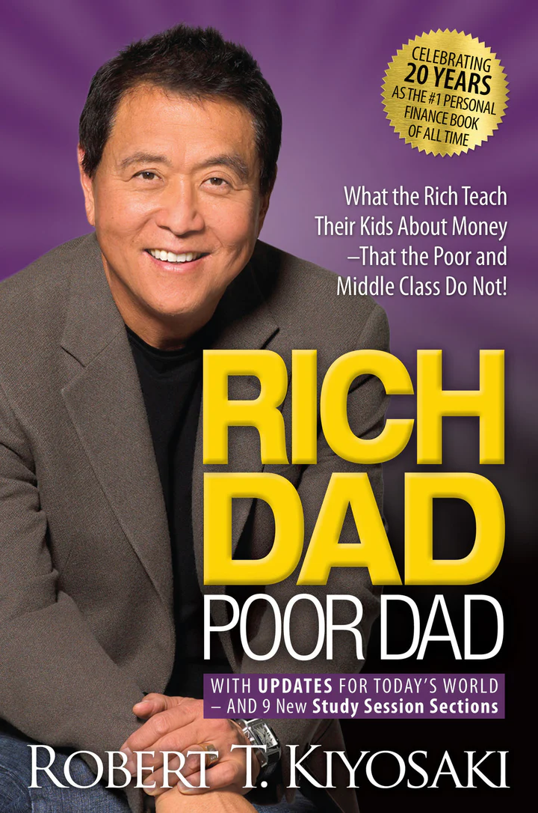

|  | Rich Dad Poor Dad by Robert T. Kiyosaki |
"Rich Dad Poor Dad" is a book written by Robert T. Kiyosaki, that teaches people about financial literacy and wealth creation. The author compares his two father figures: his biological father, who was poor and struggled financially all his life, and his best friend's father, who was wealthy and taught him valuable lessons about money. Rich Dad Poor Dad is a helpful guide for anyone looking to improve their financial situation and gain a better understanding of how money works.
Rich Dad Poor Dad is a book written by Robert Kiyosaki, which focuses on the differences in financial education and wealth accumulation between two men he calls his "dads".
The book teaches the importance of financial literacy and the power of passive income.
Rich Dad teaches Robert the importance of having multiple streams of income, taking calculated risks, and investing in assets that generate cash flow.
Poor Dad, Robert's biological father, emphasizes the importance of education, job security, and saving money.
Rich Dad emphasizes the difference between having assets and liabilities and how to use them to build wealth.
The book challenges the traditional notion that working hard and saving money is the key to financial stability.
It highlights the importance of understanding the difference between good debt (debt used to purchase assets) and bad debt (debt used to purchase liabilities).
Rich Dad emphasizes the value of acquiring knowledge and taking action to increase wealth.
The book stresses the importance of avoiding lifestyle inflation and living below your means.
Rich Dad teaches that money is not the root of all evil, but rather the lack of financial education and poor financial decision-making is the root of financial problems.
The book emphasizes the importance of having a financial plan and taking control of one's financial future.
Rich Dad stresses the importance of having a growth mindset and embracing change to create wealth.
The book encourages readers to think outside the box and challenge conventional financial wisdom.
Rich Dad emphasizes the importance of having a team of professionals, including an accountant, attorney, and financial advisor, to help manage wealth.
The book encourages readers to start small, learn from their mistakes, and continuously improve their financial skills.
Rich Dad stresses the importance of investing in real estate and using leverage to create wealth.
The book highlights the importance of having a long-term financial vision and taking consistent, deliberate action towards financial freedom.
Rich Dad teaches that wealth is not about how much money one has, but rather about having the financial freedom to do what one wants, when one wants.
The book encourages readers to embrace failure as a learning opportunity and to take calculated risks to create wealth.
Rich Dad Poor Dad challenges readers to rethink their beliefs about money and to take control of their financial futures.
Rich Dad Poor Dad by Robert T. Kiyosaki |